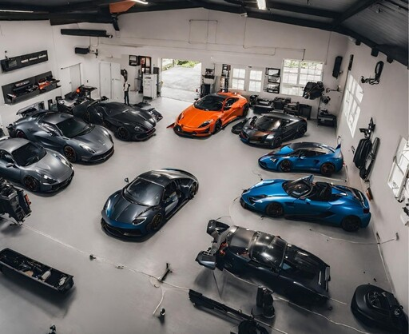
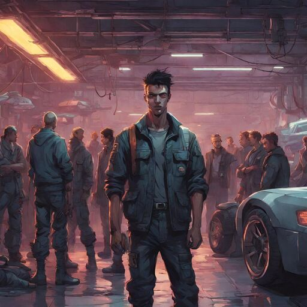
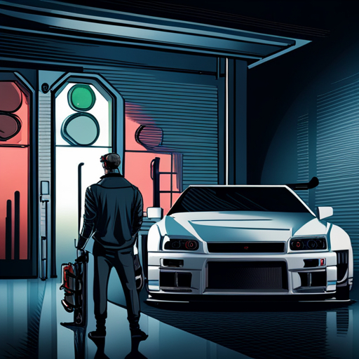

“Tuning Hearts, Taming Machines: where heroes are forged”
-Caden Colt
About
Caden Colt, the world he lives in is called Castrol, a realm where cars are infused with high performance and personalities, often evil and good.
Personality
Caden has a personality where he is an ambivert, he loves being around people who believe and love him. He is compassionate for helping people in need and has a mission to teach his knowledge in engineering and automobile performance to the young minds, who are pledged to keep the world a safe place.
Knowledge and Skills

His mastery in engineering machines, engine tuning, and profound wisdom in automobiles signifies an exceptional level of expertise and experience in the automotive and engineering domains. He even has the ability to tackle complex challenges, innovate in these fields, and provide valuable insights and solutions. His knowledge extends well beyond the basics, making him a true authority in these areas
Associates

Silviano and Suprane, these are his students who is with him all the time throughout all his projects. Both are very talented and very intelligent with critical thinking skills and fast reflexes. Caden also has a great batch of his trusted students, who are in for saving the world with their expertise in automobiles.
Quote

“In every engine's roar, there is a symphony of potential waiting to be unleashed. Just like in every heart, there is a hero ready to rise.”
.jpg)